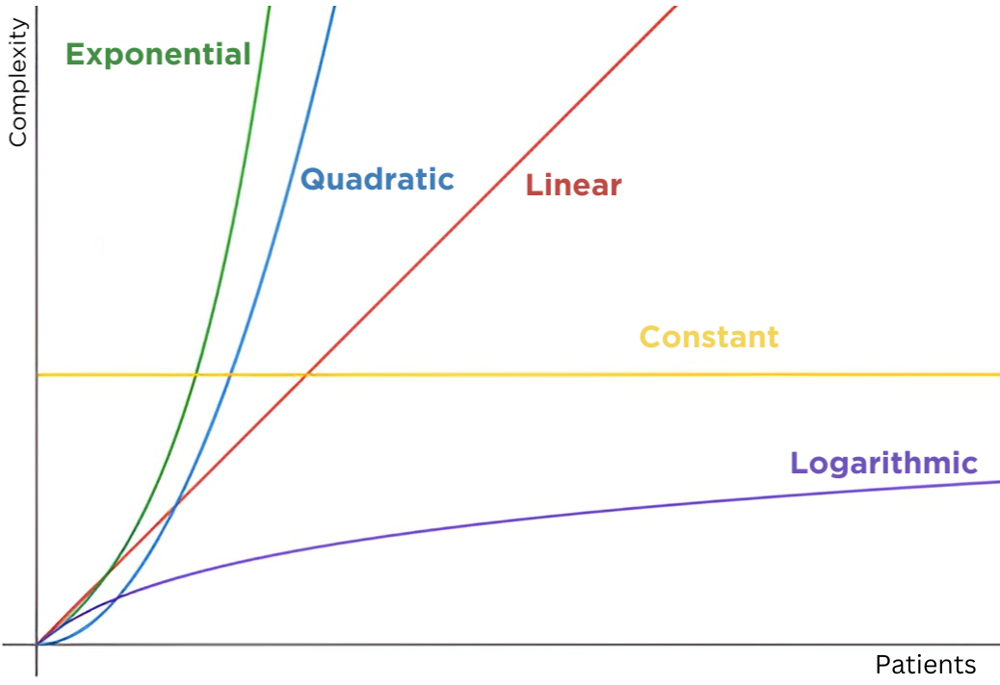

Algorithms require computing power and memory.
As we increase the number of inputs into an algorithm, the demands on these resources often increase.
Imagine a hypothetical surgeon with n patients to treat.
As n increases, the required amount of brainpower and/or memory can change in any number of ways, such as…
Scaling can vary widely in different situations.
In the case of the surgeon, linear scaling seems most likely. But it isn’t always this simple.
By understanding how an algorithm’s complexity scales with more inputs, we can predict how it’ll handle huge problems (like, for instance, a shortage of healthcare workers...)
And to really drive this point home, let's look at two common kinds of algorithms.